[N-World Contents] [Book Contents] [Prev] [Next] [Index]
Skeletons in N-Geometry (cont.)
IK Move Single
Joints
IK Move SIngle is the simplest IK operation of all-it affects only the bone immediately above the selected joint.
Here's the basic concept:
Try this:
1. Create a skeleton primitive.
2. (CLICK-L) on points on the element sensitivity menu.
3. (SHIFT-L) on the right ankle joint.
4. (CLICK-M) on IK Set.
- The IK Set dialog box appears. Make the following changes to the IK Set for the right ankle joint:
- When you're done, the IK Set should look like this:
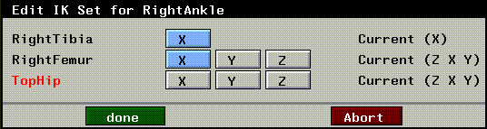
Figure 2.50 Defining an IK Set for an IK Move Root operation
5. (CLICK-L) on Done to save the IK Set.
6. Enter a name for the IK Set in the dialog box that appears and (CLICK-L) on Done.
7. (SHIFT-L) on the right ankle joint, then (CLICK-L) on IK Move Single.
- Move the mouse to pose the skeleton. Note that only the right tibia moves when you move the mouse:
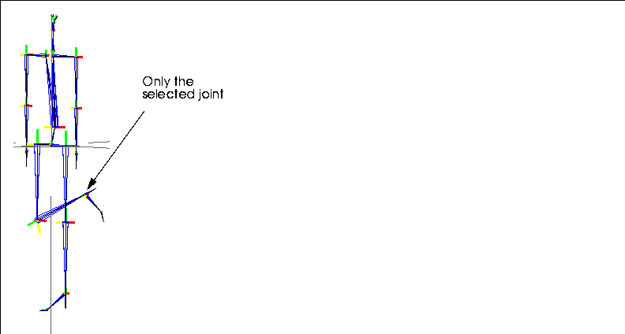
Figure 2.51 IK Move Single using right ankle joint
IK Move thru Root
Joints
IK Move thru Root has some similarities to IK Move Root, in that one joint is pinned and the root changes position; however, with this operation, you are moving a second joint rather than the root itself.
Here's the basic concept:
Try this:
1. Create a skeleton primitive.
2. (CLICK-L) on points on the element sensitivity menu.
3. (SHIFT-L) on the right ankle joint.
4. (CLICK-M) on IK Move thru Root.
- The IK Set dialog box appears. Make the following changes to the IK set for the right ankle joint:
- When you're done, the IK Set should look like this:
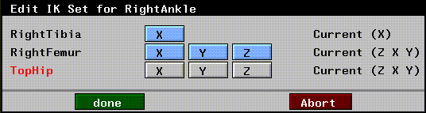
Figure 2.52 Sample IK Set for an IK Move thru Root operation
5. (CLICK-L) on Done to save the IK Set.
6. Enter a name for the IK Set in the dialog box that appears and (CLICK-L) on Done.
- N-Geometry goes into point-collect mode.
7. (CLICK-L) on a joint on the other side of the root.
- For this example, (CLICK-L) on the left wrist joint.
8. (CLICK-R) to end the collection of joints.
- Note. If no IK Set has been defined for the joint selected in step 7, the IK Set dialog box will be displayed for you. Enter an appropriate IK Set for the joint, then continue on.
- Drag the mouse around, both left to right and up and down.
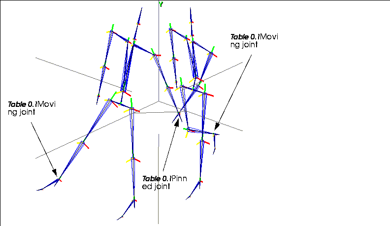
Figure 2.53 Two poses made from the same skeleton using IK Move thru Root. A selected joint is pinned (in this case the left wrist) while a second joint is moved using IK (in this case the right ankle)
- Note that the left wrist joint stay pinned, while your mouse controls position of the right ankle. (Figure 2.53 shows the same skeleton posed in two positions using this operation.)
Other Notes on IK Move thru Root
IK Rotate Root
Joints
The IK Rotate Root operation lets you freely rotate the root around a fixed joint (or set of joints) on the skeleton.
Here's the basic concept:
Try this:
1. Create a skeleton primitive.
2. (CLICK-L) on points on the element sensitivity menu.
3. (SHIFT-L) on the right ankle joint.
4. (CLICK-M) on IK Set.
- The IK Set dialog box appears. Make the following changes to the IK Set for the right ankle joint:
- When you're done, the IK Set should look like this:

Figure 2.54 Sample IK Set for an IK Rotate Root operation
5. (CLICK-L) on Done to save the IK Set.
6. Enter a name for the IK Set in the dialog box that appears and (CLICK-L) on Done.
7. (SHIFT-L) on the right ankle joint, then (CLICK-R) on IK Rotate Root.
- Drag the mouse right to pose the skeleton as shown below. In this example, we're rotating the root primarily around the Y axis:
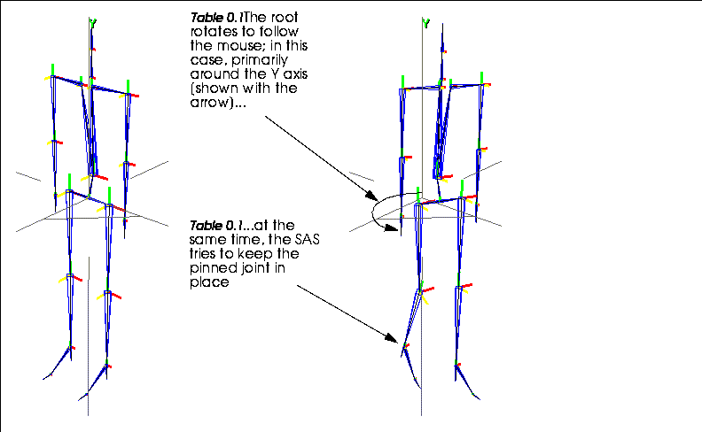
Figure 2.55 Left, original skeleton; right, IK Rotate Root pinning right ankle joint and rotating primarily around Y axis
- The joint(s) that you "pinned" in step 7 (the right ankle in the example above) remain as close as possible to their pinned position.
- Try pinning both of the wrist joints down and rotating the root!
Other Notes on IK Rotate Root
IK Set
Joints
The set of rules that determine how an IK move is performed for a joint is called an IK set. An IK set specifies which bones can move in which directions to complete a specified IK move.
IK moves can be performed interactively in N-Geometry, or using any of the IK move operations in N-Dynamics, as described in Chapter 3, "pwd."
This command performs the following operations:
Editing an IK Set
To edit an existing IK set:
1. (SHIFT-L) on the joint.
2. (CLICK-M) on IK Set.
- A list of IK sets associated with the joint is displayed:
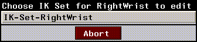
Figure 2.56 Choosing an IK set to edit
3. (CLICK-L) on the IK set you want to edit.
- The selected IK set is displayed:
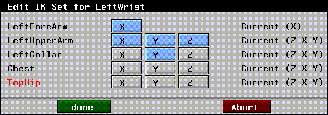
Figure 2.57 Editing an IK set
- Turn rotations on and off for the bones contained in the IK set.
4. (CLICK-L) on Done to save the IK set.
Creating an IK Set
To create an IK set for a joint:
1. (SHIFT-L) on the joint.
2. (CLICK-L) on IK Set.
- The degrees of freedom in effect for the selected joint are displayed:
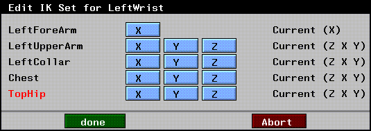
Figure 2.58 Defining an IK set
- In this example, for a wrist joint, a list of bones all the way back to the root is displayed.
3. Specify which directions each bone in that chain can rotate when an IK move is performed with the selected joint.
4. (CLICK-L) on Done and enter the name of the IK set in the dialog box that appears.
- By default, the name contains the name of the joint:
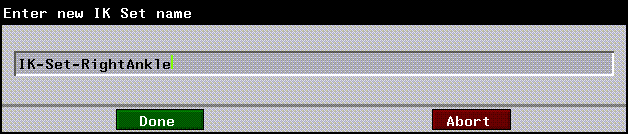
Figure 2.59 Naming an IK set
- You can specify multiple IK sets for the same joint; you select which IK set to use when performing an IK move (as described in the sections "IK Move," on page 2-39, "IK Move 2D," on page 2-40, and elsewhere).
5. (CLICK-L) on Done to save the IK set.
Renaming or Deleting an IK Set
To delete or rename a saved IK set:
1. (SHIFT-L) on the joint with which the IK set is associated.
2. (CLICK-R) on IK Set.
- The following menu is displayed:
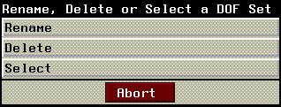
Figure 2.60 Deleting or renaming a pose
Renaming an IK Set
Displays a list of IK sets saved for the joint. (CLICK-L) on the IK set you want to rename, then change that name in the dialog box that appears.
Deleting a IK Set
Displays a list of saved IK sets.
Selecting a IK Set
Displays a list of IK sets saved for the joint. (CLICK-L) on the IK set you want to use.
Joint Identification
Joints
Define which set of predefined DOF limits are used to govern movement of the selected joint.
To define a joint as a particular type of joint:
1. (SHIFT-L) on the joint.
2. (CLICK-L) on Joint Identification.
- The following dialog box is displayed:
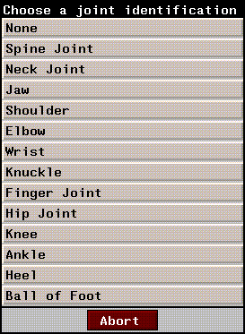
Figure 2.61 Assigning a predefined joint ID
3. (CLICK-L) on the type of joint you want the selected joint to act like.
- The following prompt is displayed:
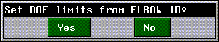
Figure 2.62 Setting DOF limits based on the joint ID assignment
The DOF limits for each Joint ID are shown in Table 2.1:
- Note. If a joint can be identified as either the "right" or "left" of that type, the rotations may be reversed. Those shown above are for a "right" joint. As mentioned earlier, the SAS assumes a +Z orientation of the skeleton.
Lock Bone
Bones
Groups bones together so that several sibling bones (e.g., fingers on a hand) can be moved in unison by manipulating only one bone. Sibling bones are bones attached to the same superior joint.
You might select the middle finger bone on a hand and lock it to the ring finger. You could then move both fingers by moving only the ring finger.
- Note. In the default skeleton primitive created in N-Geometry, the chest, hip, feet, and heel bones are locked.
Locking a Bone
To lock one bone to another:
1. (SHIFT-L) on the first bone.
- A dialog box appears, displaying a list of sibling bones:
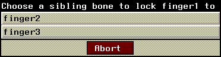
Figure 2.63 List of sibling bones
2. (CLICK-L) on the bone you want to lock this bone to.
Unlocking a Bone
To unlock a bone:
1. (SHIFT-L) on the bone you want to unlock.
2. (CLICK-M) on Lock Bone to unlock the bone.
- The bone is unlocked from any other bone that it may have been locked to.
Make Attached Objects
Skeletons
The Make Attached Objects command lets you attach a set of polyhedra to the skeleton you want to animate. This is particularly useful for testing an animation without attaching objects by hand.
However, if you plan on using attached objects for your animation, it's also an easy way to get started-objects are attached to the correct bone, and can be modified to make a completely unique correction.
Try this:
1. Load the following skeleton:
/usr/local/ngc/demo/acclaim/acclaim_walk_man.asf
- The skeleton appears in the N-Geometry window.
2. (SHIFT-L) on the skeleton.
3. (CLICK-L) on Make Attached Objects.
- The following prompt appears:
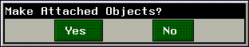
Figure 2.64 Make Attached Objects?
4. (CLICK-L) on Yes.
- Individual polyhedra are created and attached to each bone on the skeleton. Your skeleton should now look something like this:
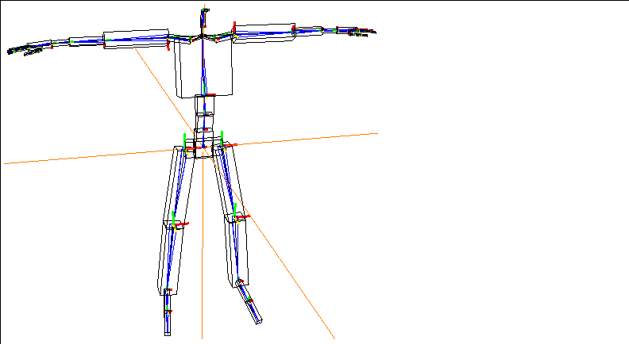
Figure 2.65 The Make Attached Objects command attaches polyhedra to each bone
The objects are automatically restructured into a top level object called skeleton attached Objects, where skeleton is the name of the skeleton to which the objects are attached. Individual polyhedra are subobjects under the top level object.
Modifying Attached Objects
Once you've attached the objects, you could simply use the tools in N-Geometry to add complexity to the objects in order to create a character.
You can make any topological changes to the attached object. In Figure 2.66, we scaled some of the faces at different joint and pulled out some additional detail around the head to create something of our own:
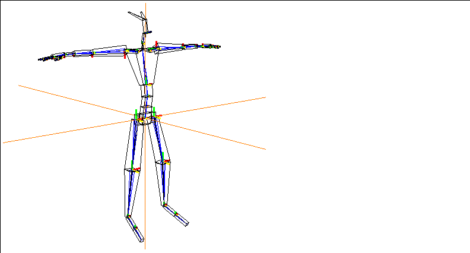
Figure 2.66 You can modify attached objects to create a unique character
Make Skin Parts
Skeletons
Performs the following "skin part" operations:
Skin parts are created by associating an object with a skeleton as a skin, then dividing that skin into "parts" based on their proximity to bones on the skeleton. When the skeleton is animated, the skin parts behave based on the transformation of the bone it's attached to.
You'll be most likely to use this operation if you are defining your own skin parts on a model; for example, you might decide that you want to replace the skin parts you've created manually with the defaults (in which case you can (CLICK-L) or (CLICK-M). If you want to clear the skin parts that have been assigned (but not detach the skin from the skeleton) you can (CLICK-R). See the section on autoskinning in the Skeletal Animation System Tutorial.
Create Default Skin Parts
To create default skin parts for attached skins:
1. (SHIFT-L) on the skeleton.
2. (CLICK-L) on Make Skin Parts.
- This makes skin parts that are hard when the bone rotates, but soft when the bone is twisted or scaled.
Create Default Hard Skin Parts
To create default hard skin parts for attached skins:
1. (SHIFT-L) on the skeleton.
2. (CLICK-M) on Make Skin Parts.
- This makes skin parts that are hard when the bone is rotated, twisted, or scaled.
Clear All Skin Parts
To clear any skin parts that have been assigned to the skeleton:
1. (SHIFT-L) on the skeleton.
2. (CLICK-R) on Make Skin Parts.
- This clears the bones of any skin parts from the attached skins, but leaves the skins attached.
Move
Skeletons
To move the skeleton freely:
1. (SHIFT-L) on the skeleton.
For a more complete description of the Move command, see the N-Geometry Reference Guide.
Motion Transform
Skeletons
This operation lets you transform the motion capture data captured for one skeleton so that it can be used to animate a second skeleton of different orientation and/or dimensions.
1. Read in the skeleton for the motion capture file you want to animate.
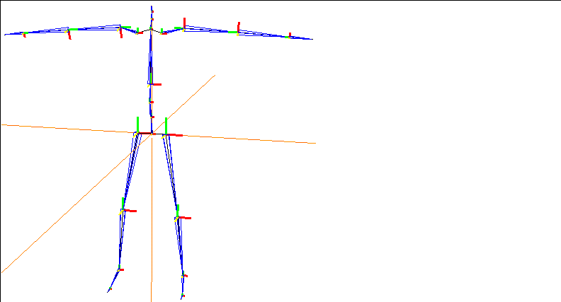
Figure 2.67 Read in the skeleton from the motion capture file you want to animate
2. Read in the skin you want to animate.
3. Align the hips of the skin with the root of the skeleton.
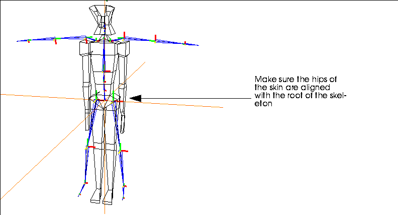
Figure 2.68 Move the skin so that its hips are aligned with the skeleton's root
4. (SHIFT-L) on the skin, then (CLICK-L) an Make Displacement.
- Make an Absolute displacement on the skin and call it "Base".
- Note. Moving the root of the skeleton out of the global origin will likely cause unwanted behavior when interpolating the motion data. If it is necessary to move the skeleton away from global zero, you should do so in a dynamics transform-root channel.)
5. Using N-Geometry's skeletal operations, modify the skeleton so that it fits your skin.
- Use the various rotate and scaling commands, or the browser, to match the skeleton to the skin.
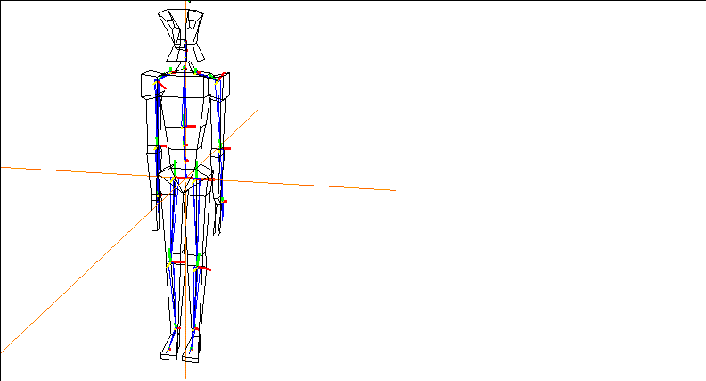
Figure 2.69 Align the skeleton with the skin
6. Save a new base state for the modified skeleton.
- (SHIFT-L) on the skeleton, then (CLICK-L) on Base. Use the same name for the base state of the skeleton that you used for the skin in step 4.
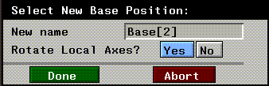
Figure 2.70 Save the base state for the skeleton
- (CLICK-L) on the Done button to save the base state.
Now that you have aligned the skin and posed the skeleton to match it, you can perform the motion transform procedure on the altered skeleton.
7. Rename your altered skeleton with a distinct name.
Figure 2.71 Rename the skeleton
At this point, you have two elements in memory:
To complete the transform, you must reread the original skeleton back into N-Geometry:
8. Reread the original skeleton from the motion capture file.
- You should see both skeletons in the N-Geometry window:
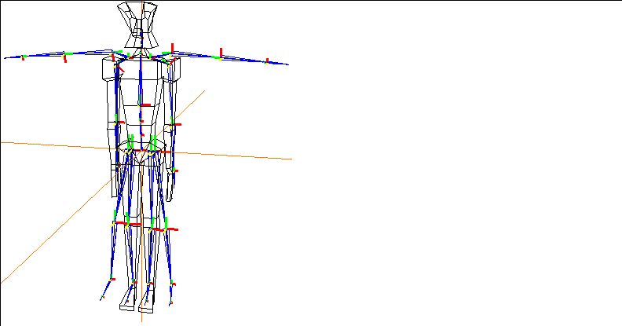
Figure 2.72 Original and altered skeleton
9. (SHIFT-L) on the altered skeleton, then (CLICK-L) on Motion Transform.
10. Select the original (unaltered) skeleton from the object list that appears.
- You're next asked if you want to select a bone on which to base the transformation of the translation data.
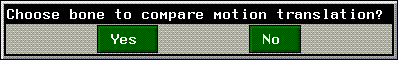
Figure 2.73 Choosing a bone to compare translation
11. (CLICK-L) on Yes.
12. You're next prompted to select the bone on the altered skeleton that the translations should be based on.
- Note. If you are doing a Motion Transform from one skeleton to another skeleton, try to keep the bones which you are dependent on for the motion transform in close proportion to the bones in the original skeleton. You can still scale the skeleton (e.g., to copy the motion from a man to a dwarf), but don't change the proportion of the bone to the overall skeleton.
For example, if you are doing a walk cycle and do not want any slippage or Y translation, try to keep the bones of the legs in the altered skeleton proportionate to the bones of the legs in the original skeleton. If you need more consistency in the motion of the arms, then keep the upper arm bones proportionate.
In general, avoid using any Scaling operations on just the bone being used on the motion transform.
Once you've completed the transform:
13. Create an N-Dynamics script with at least two channels:
14. Edit the Read Motion Data channel.
- If you're working with an Acclaim skeleton, use Read Acclaim Data, and complete it like this:
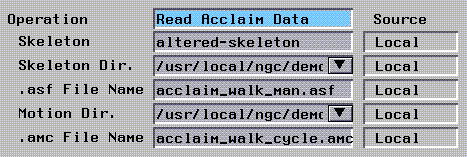
Figure 2.74 Using Acclaim data
Figure 2.75 Using Biovision data
15. Edit the Update Skeleton channel.
- In the Update Skeleton channel, make sure you select the altered skeleton:
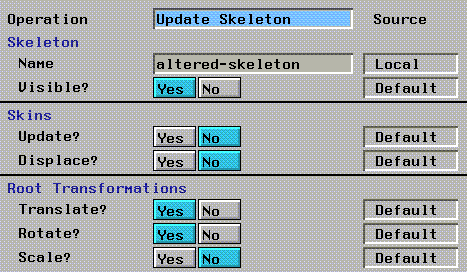
Figure 2.76 Select the altered skeleton in the Update Skeleton channel
16. (CLICK-L) on the Animate button to animate your script.
After testing the motion transform on the new skeleton, you can proceed to skin the skeleton as described in the Skeletal Animation System Tutorial Guide.
Notes on Using Motion Transform
- Note. Moving the root of the skeleton out of the global origin will likely cause unwanted behavior when interpolating the motion data. If it is necessary to move the skeleton away from global zero, you should do so in a dynamics transform-root channel.
(CLICK-L) on [Next] to continue...
[N-World Contents] [Book Contents] [Prev] [Next] [Index]
 Another fine product from Nichimen documentation!
Another fine product from Nichimen documentation!
Copyright © 1996, Nichimen Graphics Corporation. All rights
reserved.